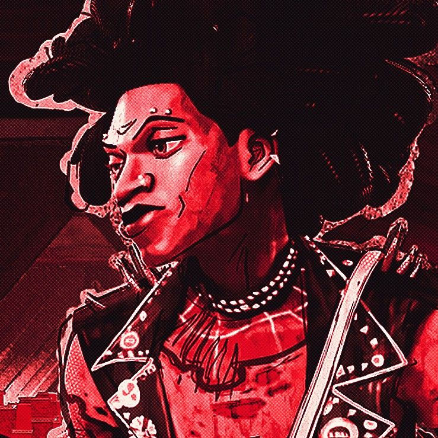

Hobie Brown
Cheto el Hound
⋯
Isami Sato y Alexis Tedro cursan quinto año de secundaria en la Escuela Media N.º 45 de Callijan. Una escuela precaria, de bajos recursos, pero funcional.
Isami es un estudiante aplicado, abanderado de curso dos años continuos, pero últimamente sus notas han decaído, aparece en clases con ojeras marcadas, distraído, somnoliento, exhausto.
Por otro lado, Alexis nunca fue de obtener muy buenas calificaciones. Pero últimamente, sus notas son tan desastrosas que parece como si de un momento a otro hubiera olvidado todos los temas. Isami hace lo mejor que puede para ayudar a su amigo a pasar de año.
Desde primer año que se sientan juntos, sin falta, todos los días de clase. Así fue… hasta que, en septiembre, Alexis faltó varias semanas al colegio. Dice que fue porque estaba enfermo.
Tampoco respondió a ningún mensaje; asegura que fue porque su celular se había roto. Isami decidió creerle, al fin y al cabo, es su mejor amigo, no tendría por qué mentirle.
Aunque, en lo profundo de su mente, aquel matiz extraño en su tono de voz, en su mirada vacía, en sus movimientos rígidos, como si estuviera aprendiendo a controlar su propio cuerpo, hacía que pensara que había algo más, algo oscuro, de lo que no estaba enterado.
Pero él elige no pensar en eso. Él es Alexis. Su amigo. Su mejor amigo. No podría desconfiar de él.
Callijan es una ciudad pequeña del conurbano bonaerense, al noroeste de la provincia de Buenos Aires. Está rodeada de barrios residenciales, quintas y ríos. Como en cualquier ciudad, hay sectores tranquilos… y otros en los que, si te atreves a poner un pie después de las once de la noche, más vale que te vayas despidiendo del celular.
Entre la oscuridad de los edificios y los campos emerge cada noche un sujeto arácnido: el Hombre Araña, más conocido como la “Araña Yokai” o simplemente la araña fantasma. Un superhéroe nocturno, con tintes japoneses, auto declarado Onmyoji, que mantiene a raya la violencia de los barrios bajos y se deshace de los espíritus malignos que acechan a la ciudad. La policía y los medios buscan con desesperación revelar su identidad.
A las afueras de la ciudad, en medio del campo, se encuentran las ruinas de lo que fue un centro clandestino. Hoy funciona como Espacio de Memoria, sede de excursiones escolares y actos conmemorativos. Sin embargo, se rumorea que la noche del 21 de septiembre algo salió de entre los escombros. Dicen que no era humano ni animal, sino un ente oscuro y baboso que reptaba. Pero claro, es solo un rumor.
También se dice que Alexis Tredo fue el último en visitar el centro en ruinas antes de que lo cerraran al público. Pero eso también es solo un rumor. Alexis dice jamás haber ido a las ruinas, él está bien. Es el mismo de siempre… ¿verdad?
Un estudiante ordinario de secundaria, argentino de clase media-baja de notas promedio. Es un chico alegre y energético. La noche del 21 de septiembre se lo vio yendo al centro en ruinas de la ciudad, ese día desapareció por semanas. Supuestamente, estuvo enfermo en su casa.
Un estudiante ordinario de secundaria, argentino de madre japonesa. Abanderado de curso y de clase media, es un chico tranquilo y callado, que sueña con ser diseñador grafico, a pesar de que su madre insista en que siga el negocio familiar de funerarias.
Se ha hecho presente en las calles una nueva amenaza, un ente ni humano ni animal que se dedica a masacrar los ciudadanos de Callijan. Si tratas con él, cualquier suma de dinero será suficiente para que liquide al ciudadano de tu preferencia.

Un héroe arácnido que convierte hojas de papel en shikigami, entes espirituales de papel que le ayudan a combatir el crimen en Callijan.
Comentarios